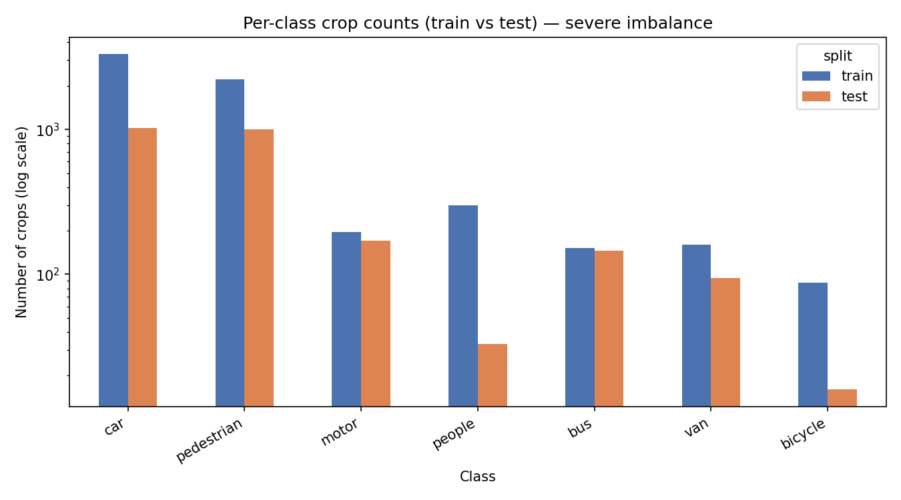
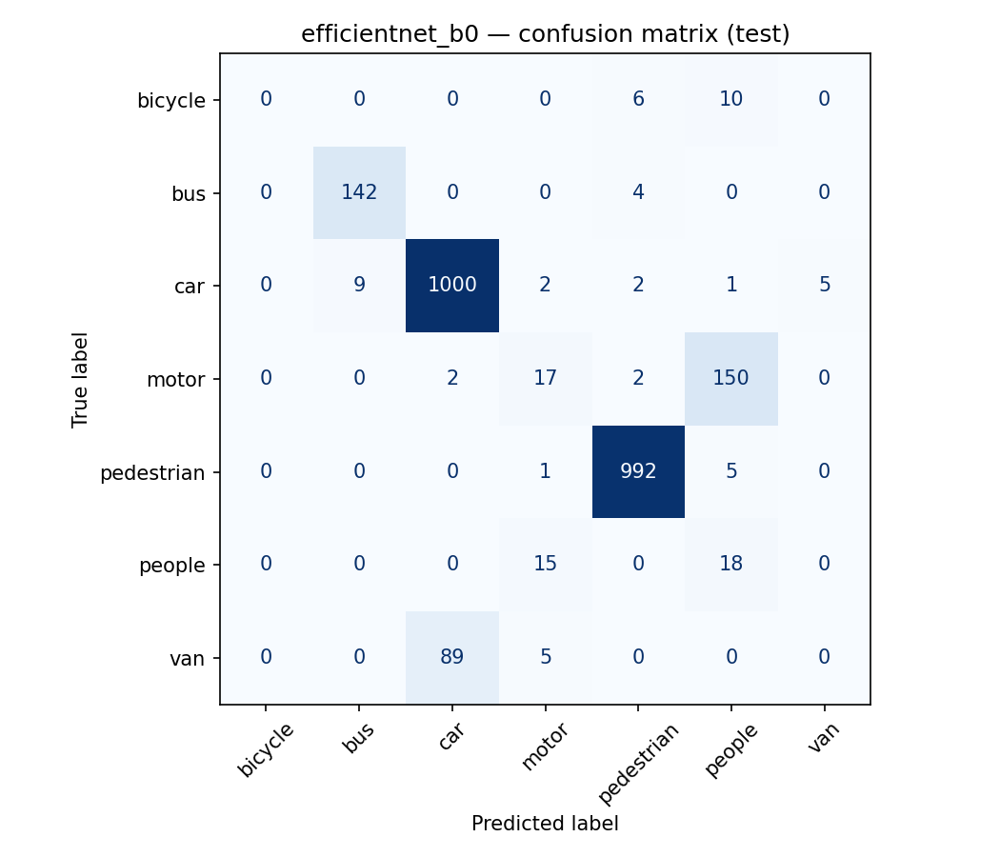
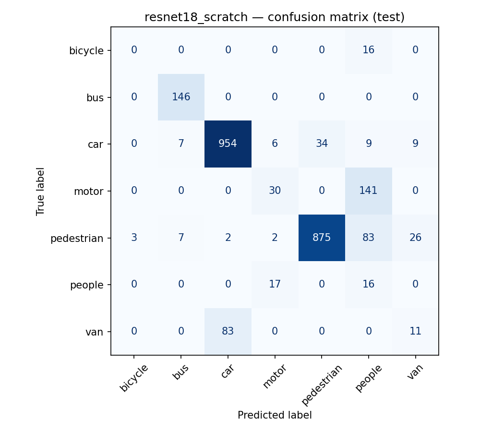

UAV Aerial Object Classification
Seven-class classification of objects cropped from UAV video, benchmarking classical features against CNNs, and quantifying exactly how much a naïve train/test split inflates the numbers.
The problem
The task was to classify 8,903 object crops (car, bus, truck, van, person, bicycle, motor) extracted from a 146-frame UAV sequence. Two things make it hard: severe class imbalance (car ≈ 42% of samples, bicycle ≈ 1%), and the fact that crops from the same vehicle track across consecutive frames are near-duplicates. Split those randomly and the test set is full of objects the model already saw in training, so the score looks great and means nothing.
Approach
- Classical baselines: HOG features fed to a Linear SVM, an RBF SVM and a Random Forest.
- CNNs: ResNet-18, MobileNetV2 and EfficientNet-B0 via transfer learning from ImageNet.
- Leakage-aware split: a track-ID group split so all crops from one object stay on the same side of train/test.
- Ablations: pretrained vs from-scratch, and with vs without class-imbalance handling.
- Reported macro-F1 (not just accuracy) to respect the imbalance.
Results
| Model | Accuracy | Macro-F1 |
|---|---|---|
| HOG + Linear SVM | 0.776 | 0.402 |
| HOG + RBF SVM | 0.824 | 0.359 |
| HOG + Random Forest | 0.803 | 0.256 |
| MobileNetV2 | 0.851 | 0.480 |
| ResNet-18 | 0.868 | 0.462 |
| EfficientNet-B0 | 0.876 | 0.460 |
CNNs clearly beat the classical baselines on macro-F1, the imbalance hurts HOG+RF most (0.256), where minority classes collapse. Among CNNs the three backbones are close; EfficientNet-B0 edges accuracy, MobileNetV2 the macro-F1.




The key finding, data leakage
This was the real contribution. Under a naïve random split, a Random Forest scored 0.906 accuracy / 0.776 macro-F1. The exact same model under a correct track-aware group split dropped to 0.803 / 0.256, a macro-F1 collapse of 0.52. Almost all of the apparent "performance" was the model recognising near-duplicate crops it had already trained on.
| Split | Accuracy | Macro-F1 |
|---|---|---|
| Naïve random (leaky) | 0.906 | 0.776 |
| Track-aware (honest) | 0.803 | 0.256 |
The lesson generalises well beyond this dataset: the split protocol can matter more than the model.
Ablations
Two controlled comparisons on ResNet-18: transfer learning beat training from scratch (0.868 vs 0.820 accuracy), confirming the value of ImageNet features on a small dataset; explicit imbalance handling traded a little accuracy for more balanced per-class behaviour.

What I took away
- Always ask how correlated your samples are before choosing a split, group leakage is silent and flattering.
- On imbalanced data, accuracy lies; macro-F1 tells the truth.
- A strong classical baseline frames how much the CNN actually buys you.